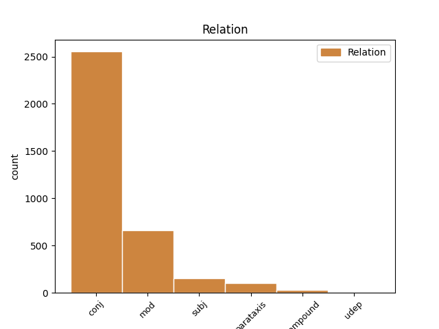
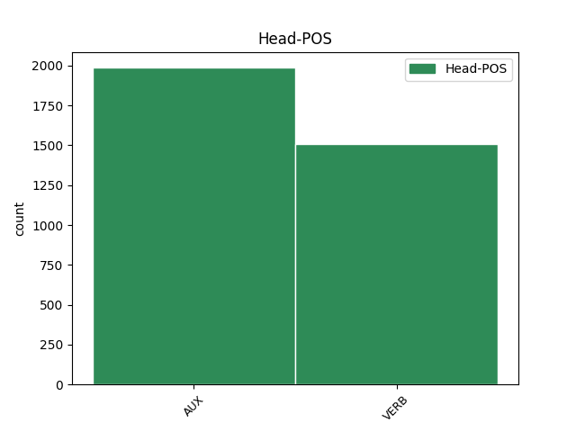
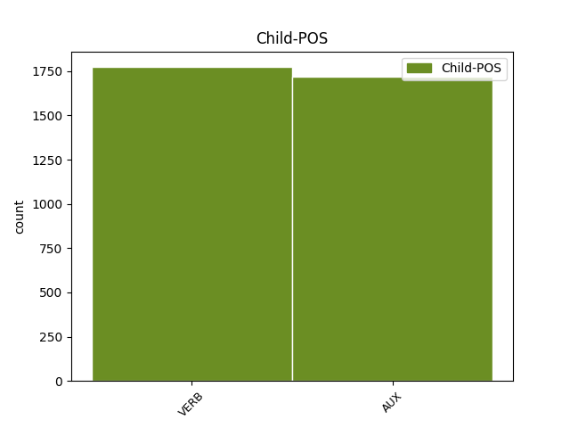

Distribution of features within this leaf



Agreement Rules sorted by frequency.
- When the dependent token is the conjunct(conj) of the head token, and the head token is AUX and the dependent token is AUX.
1 Ana _ _ _ _ 0 _ _ _
2 Palacio _ _ _ _ 0 _ _ _
3 va anar AUX AUX Mood=Ind|Number=Sing|Person=3|Tense=Pres|VerbForm=Fin 0 _ _ _
4 qualificar _ _ _ _ 0 _ _ _
5 la _ _ _ _ 0 _ _ _
6 trobada _ _ _ _ 0 _ _ _
7 amb _ _ _ _ 0 _ _ _
8 Jack _ _ _ _ 0 _ _ _
9 Straw _ _ _ _ 0 _ _ _
10 de _ _ _ _ 0 _ _ _
11 " _ _ _ _ 0 _ _ _
12 molt _ _ _ _ 0 _ _ _
13 fructífera _ _ _ _ 0 _ _ _
14 " _ _ _ _ 0 _ _ _
15 , _ _ _ _ 0 _ _ _
16 i _ _ _ _ 0 _ _ _
17 va anar AUX AUX Mood=Ind|Number=Sing|Person=3|Tense=Pres|VerbForm=Fin 3 conj _ _
18 manifestar _ _ _ _ 0 _ _ _
19 que _ _ _ _ 0 _ _ _
20 havia _ _ _ _ 0 _ _ _
21 percebut _ _ _ _ 0 _ _ _
22 una _ _ _ _ 0 _ _ _
23 voluntat _ _ _ _ 0 _ _ _
24 política _ _ _ _ 0 _ _ _
25 britànica _ _ _ _ 0 _ _ _
26 per _ _ _ _ 0 _ _ _
27 arribar _ _ _ _ 0 _ _ _
28 a _ _ _ _ 0 _ _ _
29 un _ _ _ _ 0 _ _ _
30 acord _ _ _ _ 0 _ _ _
31 . _ _ _ _ 0 _ _ _
1 El _ _ _ _ 0 _ _ _
2 projecte _ _ _ _ 0 _ _ _
3 que _ _ _ _ 0 _ _ _
4 està _ _ _ _ 0 _ _ _
5 elaborant _ _ _ _ 0 _ _ _
6 el _ _ _ _ 0 _ _ _
7 Govern _ _ _ _ 0 _ _ _
8 central _ _ _ _ 0 _ _ _
9 suprimeix suprimir VERB VERB Mood=Ind|Number=Sing|Person=3|Tense=Pres|VerbForm=Fin 0 _ _ _
10 aquesta _ _ _ _ 0 _ _ _
11 funció _ _ _ _ 0 _ _ _
12 dels _ _ _ _ 0 _ _ _
13 regidors _ _ _ _ 0 _ _ _
14 i _ _ _ _ 0 _ _ _
15 l' _ _ _ _ 0 _ _ _
16 atribueix atribuir VERB VERB Mood=Ind|Number=Sing|Person=3|Tense=Pres|VerbForm=Fin 9 conj _ _
17 exclusivament _ _ _ _ 0 _ _ _
18 a _ _ _ _ 0 _ _ _
19 l' _ _ _ _ 0 _ _ _
20 alcalde _ _ _ _ 0 _ _ _
21 , _ _ _ _ 0 _ _ _
22 que _ _ _ _ 0 _ _ _
23 serà _ _ _ _ 0 _ _ _
24 l' _ _ _ _ 0 _ _ _
25 encarregat _ _ _ _ 0 _ _ _
26 de _ _ _ _ 0 _ _ _
27 dirigir _ _ _ _ 0 _ _ _
28 els _ _ _ _ 0 _ _ _
29 components _ _ _ _ 0 _ _ _
30 del _ _ _ _ 0 _ _ _
31 seu _ _ _ _ 0 _ _ _
32 govern _ _ _ _ 0 _ _ _
33 . _ _ _ _ 0 _ _ _
1 La _ _ _ _ 0 _ _ _
2 gran _ _ _ _ 0 _ _ _
3 anècdota _ _ _ _ 0 _ _ _
4 del _ _ _ _ 0 _ _ _
5 primer _ _ _ _ 0 _ _ _
6 Govern _ _ _ _ 0 _ _ _
7 Aznar _ _ _ _ 0 _ _ _
8 I _ _ _ _ 0 _ _ _
9 va anar AUX AUX Mood=Ind|Number=Sing|Person=3|Tense=Pres|VerbForm=Fin 0 _ _ _
10 ser _ _ _ _ 0 _ _ _
11 l' _ _ _ _ 0 _ _ _
12 enlluernador _ _ _ _ 0 _ _ _
13 casament _ _ _ _ 0 _ _ _
14 de _ _ _ _ 0 _ _ _
15 Francisco _ _ _ _ 0 _ _ _
16 Álvarez-Cascos _ _ _ _ 0 _ _ _
17 , _ _ _ _ 0 _ _ _
18 i _ _ _ _ 0 _ _ _
19 ara _ _ _ _ 0 _ _ _
20 , _ _ _ _ 0 _ _ _
21 a _ _ _ _ 0 _ _ _
22 l' _ _ _ _ 0 _ _ _
23 inici _ _ _ _ 0 _ _ _
24 del _ _ _ _ 0 _ _ _
25 gabinet _ _ _ _ 0 _ _ _
26 Aznar _ _ _ _ 0 _ _ _
27 II _ _ _ _ 0 _ _ _
28 , _ _ _ _ 0 _ _ _
29 Cascos _ _ _ _ 0 _ _ _
30 torna tornar VERB AUX Mood=Ind|Number=Sing|Person=3|Tense=Pres|VerbForm=Fin 9 conj _ _
31 a _ _ _ _ 0 _ _ _
32 tenir _ _ _ _ 0 _ _ _
33 polèmica _ _ _ _ 0 _ _ _
34 . _ _ _ _ 0 _ _ _
1 Amb _ _ _ _ 0 _ _ _
2 aquesta _ _ _ _ 0 _ _ _
3 fórmula _ _ _ _ 0 _ _ _
4 , _ _ _ _ 0 _ _ _
5 als _ _ _ _ 0 _ _ _
6 ajuntaments _ _ _ _ 0 _ _ _
7 de _ _ _ _ 0 _ _ _
8 ciutats _ _ _ _ 0 _ _ _
9 com _ _ _ _ 0 _ _ _
10 Barcelona _ _ _ _ 0 _ _ _
11 , _ _ _ _ 0 _ _ _
12 Madrid _ _ _ _ 0 _ _ _
13 , _ _ _ _ 0 _ _ _
14 València _ _ _ _ 0 _ _ _
15 , _ _ _ _ 0 _ _ _
16 Sevilla _ _ _ _ 0 _ _ _
17 i _ _ _ _ 0 _ _ _
18 Bilbao _ _ _ _ 0 _ _ _
19 , _ _ _ _ 0 _ _ _
20 l' _ _ _ _ 0 _ _ _
21 actual _ _ _ _ 0 _ _ _
22 ple _ _ _ _ 0 _ _ _
23 municipal _ _ _ _ 0 _ _ _
24 es _ _ _ _ 0 _ _ _
25 convertirà convertir VERB VERB Mood=Ind|Number=Sing|Person=3|Tense=Fut|VerbForm=Fin 0 _ _ _
26 en _ _ _ _ 0 _ _ _
27 un _ _ _ _ 0 _ _ _
28 parlament _ _ _ _ 0 _ _ _
29 encarregat _ _ _ _ 0 _ _ _
30 de _ _ _ _ 0 _ _ _
31 prendre _ _ _ _ 0 _ _ _
32 les _ _ _ _ 0 _ _ _
33 decisions _ _ _ _ 0 _ _ _
34 polítiques _ _ _ _ 0 _ _ _
35 i _ _ _ _ 0 _ _ _
36 estarà estar AUX AUX Mood=Ind|Number=Sing|Person=3|Tense=Fut|VerbForm=Fin 25 conj _ _
37 format _ _ _ _ 0 _ _ _
38 pels _ _ _ _ 0 _ _ _
39 regidors _ _ _ _ 0 _ _ _
40 , _ _ _ _ 0 _ _ _
41 que _ _ _ _ 0 _ _ _
42 passaran _ _ _ _ 0 _ _ _
43 a _ _ _ _ 0 _ _ _
44 desenvolupar _ _ _ _ 0 _ _ _
45 funcions _ _ _ _ 0 _ _ _
46 de _ _ _ _ 0 _ _ _
47 control _ _ _ _ 0 _ _ _
48 de _ _ _ _ 0 _ _ _
49 la _ _ _ _ 0 _ _ _
50 gestió _ _ _ _ 0 _ _ _
51 del _ _ _ _ 0 _ _ _
52 consistori _ _ _ _ 0 _ _ _
53 . _ _ _ _ 0 _ _ _
1 La _ _ _ _ 0 _ _ _
2 pujada _ _ _ _ 0 _ _ _
3 del _ _ _ _ 0 _ _ _
4 preu _ _ _ _ 0 _ _ _
5 del _ _ _ _ 0 _ _ _
6 petroli _ _ _ _ 0 _ _ _
7 continua _ _ _ _ 0 _ _ _
8 influint _ _ _ _ 0 _ _ _
9 en _ _ _ _ 0 _ _ _
10 els _ _ _ _ 0 _ _ _
11 preus _ _ _ _ 0 _ _ _
12 industrials _ _ _ _ 0 _ _ _
13 espanyols _ _ _ _ 0 _ _ _
14 , _ _ _ _ 0 _ _ _
15 que _ _ _ _ 0 _ _ _
16 al _ _ _ _ 0 _ _ _
17 maig _ _ _ _ 0 _ _ _
18 van anar AUX AUX Mood=Ind|Number=Plur|Person=3|Tense=Pres|VerbForm=Fin 0 _ _ _
19 augmentar _ _ _ _ 0 _ _ _
20 el _ _ _ _ 0 _ _ _
21 0,4% _ _ _ _ 0 _ _ _
22 , _ _ _ _ 0 _ _ _
23 amb _ _ _ _ 0 _ _ _
24 la _ _ _ _ 0 _ _ _
25 qual _ _ _ _ 0 _ _ _
26 cosa _ _ _ _ 0 _ _ _
27 la _ _ _ _ 0 _ _ _
28 taxa _ _ _ _ 0 _ _ _
29 interanual _ _ _ _ 0 _ _ _
30 ( _ _ _ _ 0 _ _ _
31 sobre _ _ _ _ 0 _ _ _
32 el _ _ _ _ 0 _ _ _
33 mateix _ _ _ _ 0 _ _ _
34 mes _ _ _ _ 0 _ _ _
35 del _ _ _ _ 0 _ _ _
36 1999 _ _ _ _ 0 _ _ _
37 ) _ _ _ _ 0 _ _ _
38 es _ _ _ _ 0 _ _ _
39 va anar AUX AUX Mood=Ind|Number=Sing|Person=3|Tense=Pres|VerbForm=Fin 18 mod _ _
40 situar _ _ _ _ 0 _ _ _
41 en _ _ _ _ 0 _ _ _
42 el _ _ _ _ 0 _ _ _
43 5,8% _ _ _ _ 0 _ _ _
44 , _ _ _ _ 0 _ _ _
45 la _ _ _ _ 0 _ _ _
46 més _ _ _ _ 0 _ _ _
47 alta _ _ _ _ 0 _ _ _
48 des _ _ _ _ 0 _ _ _
49 del _ _ _ _ 0 _ _ _
50 1995 _ _ _ _ 0 _ _ _
51 . _ _ _ _ 0 _ _ _
1 En _ _ _ _ 0 _ _ _
2 aquesta _ _ _ _ 0 _ _ _
3 ocasió _ _ _ _ 0 _ _ _
4 ho _ _ _ _ 0 _ _ _
5 farà fer VERB VERB Mood=Ind|Number=Sing|Person=3|Tense=Fut|VerbForm=Fin 0 _ _ _
6 davant _ _ _ _ 0 _ _ _
7 el _ _ _ _ 0 _ _ _
8 ministre _ _ _ _ 0 _ _ _
9 d' _ _ _ _ 0 _ _ _
10 Administracions _ _ _ _ 0 _ _ _
11 Públiques _ _ _ _ 0 _ _ _
12 , _ _ _ _ 0 _ _ _
13 Javier _ _ _ _ 0 _ _ _
14 Arenas _ _ _ _ 0 _ _ _
15 , _ _ _ _ 0 _ _ _
16 amb _ _ _ _ 0 _ _ _
17 qui _ _ _ _ 0 _ _ _
18 es _ _ _ _ 0 _ _ _
19 reunirà reunir VERB VERB Mood=Ind|Number=Sing|Person=3|Tense=Fut|VerbForm=Fin 5 mod _ _
20 dimecres _ _ _ _ 0 _ _ _
21 . _ _ _ _ 0 _ _ _
1 Mentre _ _ _ _ 0 _ _ _
2 Hillary _ _ _ _ 0 _ _ _
3 i _ _ _ _ 0 _ _ _
4 Chelsea _ _ _ _ 0 _ _ _
5 s' _ _ _ _ 0 _ _ _
6 entregaven _ _ _ _ 0 _ _ _
7 a _ _ _ _ 0 _ _ _
8 l' _ _ _ _ 0 _ _ _
9 esquí _ _ _ _ 0 _ _ _
10 a _ _ _ _ 0 _ _ _
11 Deer _ _ _ _ 0 _ _ _
12 Valley _ _ _ _ 0 _ _ _
13 , _ _ _ _ 0 _ _ _
14 envoltades _ _ _ _ 0 _ _ _
15 d' _ _ _ _ 0 _ _ _
16 un _ _ _ _ 0 _ _ _
17 espectacular _ _ _ _ 0 _ _ _
18 dispositiu _ _ _ _ 0 _ _ _
19 de _ _ _ _ 0 _ _ _
20 seguretat _ _ _ _ 0 _ _ _
21 , _ _ _ _ 0 _ _ _
22 Bill _ _ _ _ 0 _ _ _
23 amb _ _ _ _ 0 _ _ _
24 prou _ _ _ _ 0 _ _ _
25 feines _ _ _ _ 0 _ _ _
26 va _ _ _ _ 0 _ _ _
27 travessar _ _ _ _ 0 _ _ _
28 el _ _ _ _ 0 _ _ _
29 llindar _ _ _ _ 0 _ _ _
30 de _ _ _ _ 0 _ _ _
31 la _ _ _ _ 0 _ _ _
32 mansió _ _ _ _ 0 _ _ _
33 , _ _ _ _ 0 _ _ _
34 ja _ _ _ _ 0 _ _ _
35 que _ _ _ _ 0 _ _ _
36 una _ _ _ _ 0 _ _ _
37 antiga _ _ _ _ 0 _ _ _
38 lesió _ _ _ _ 0 _ _ _
39 que _ _ _ _ 0 _ _ _
40 es _ _ _ _ 0 _ _ _
41 va anar AUX AUX Mood=Ind|Number=Sing|Person=3|Tense=Pres|VerbForm=Fin 0 _ _ _
42 fer _ _ _ _ 0 _ _ _
43 fa fer VERB AUX Mood=Ind|Number=Sing|Person=3|Tense=Pres|VerbForm=Fin 41 mod _ _
44 anys _ _ _ _ 0 _ _ _
45 mentre _ _ _ _ 0 _ _ _
46 esquiava _ _ _ _ 0 _ _ _
47 li _ _ _ _ 0 _ _ _
48 impedeix _ _ _ _ 0 _ _ _
49 lliscar _ _ _ _ 0 _ _ _
50 per _ _ _ _ 0 _ _ _
51 la _ _ _ _ 0 _ _ _
52 neu _ _ _ _ 0 _ _ _
53 . _ _ _ _ 0 _ _ _
1 HB _ _ _ _ 0 _ _ _
2 ha _ _ _ _ 0 _ _ _
3 gestionat _ _ _ _ 0 _ _ _
4 , _ _ _ _ 0 _ _ _
5 des _ _ _ _ 0 _ _ _
6 de _ _ _ _ 0 _ _ _
7 la _ _ _ _ 0 _ _ _
8 dècada _ _ _ _ 0 _ _ _
9 dels _ _ _ _ 0 _ _ _
10 90 _ _ _ _ 0 _ _ _
11 , _ _ _ _ 0 _ _ _
12 el _ _ _ _ 0 _ _ _
13 cobrament _ _ _ _ 0 _ _ _
14 de _ _ _ _ 0 _ _ _
15 l' _ _ _ _ 0 _ _ _
16 impost _ _ _ _ 0 _ _ _
17 revolucionari _ _ _ _ 0 _ _ _
18 ( _ _ _ _ 0 _ _ _
19 extorsió _ _ _ _ 0 _ _ _
20 econòmica _ _ _ _ 0 _ _ _
21 ) _ _ _ _ 0 _ _ _
22 , _ _ _ _ 0 _ _ _
23 per _ _ _ _ 0 _ _ _
24 ordre _ _ _ _ 0 _ _ _
25 d' _ _ _ _ 0 _ _ _
26 ETA _ _ _ _ 0 _ _ _
27 , _ _ _ _ 0 _ _ _
28 com _ _ _ _ 0 _ _ _
29 consta constar VERB VERB Mood=Ind|Number=Sing|Person=3|Tense=Pres|VerbForm=Fin 0 _ _ _
30 en _ _ _ _ 0 _ _ _
31 un _ _ _ _ 0 _ _ _
32 document _ _ _ _ 0 _ _ _
33 del _ _ _ _ 0 _ _ _
34 juny _ _ _ _ 0 _ _ _
35 del _ _ _ _ 0 _ _ _
36 1993 _ _ _ _ 0 _ _ _
37 dirigit _ _ _ _ 0 _ _ _
38 a _ _ _ _ 0 _ _ _
39 ETA _ _ _ _ 0 _ _ _
40 : _ _ _ _ 0 _ _ _
41 " _ _ _ _ 0 _ _ _
42 La _ _ _ _ 0 _ _ _
43 setmana _ _ _ _ 0 _ _ _
44 passada _ _ _ _ 0 _ _ _
45 es _ _ _ _ 0 _ _ _
46 va anar AUX AUX Mood=Ind|Number=Sing|Person=3|Tense=Pres|VerbForm=Fin 29 mod _ _
47 rebre _ _ _ _ 0 _ _ _
48 a _ _ _ _ 0 _ _ _
49 Herri _ _ _ _ 0 _ _ _
50 Batasuna _ _ _ _ 0 _ _ _
51 la _ _ _ _ 0 _ _ _
52 trucada _ _ _ _ 0 _ _ _
53 de _ _ _ _ 0 _ _ _
54 Joseba _ _ _ _ 0 _ _ _
55 Egibar _ _ _ _ 0 _ _ _
56 ( _ _ _ _ 0 _ _ _
57 portaveu _ _ _ _ 0 _ _ _
58 del _ _ _ _ 0 _ _ _
59 PNB _ _ _ _ 0 _ _ _
60 ) _ _ _ _ 0 _ _ _
61 . _ _ _ _ 0 _ _ _
1 Qui _ _ _ _ 0 _ _ _
2 s' _ _ _ _ 0 _ _ _
3 envolta envoltar VERB VERB Mood=Ind|Number=Sing|Person=3|Tense=Pres|VerbForm=Fin 7 subj _ _
4 de _ _ _ _ 0 _ _ _
5 gossos _ _ _ _ 0 _ _ _
6 agressius _ _ _ _ 0 _ _ _
7 ha haver AUX AUX Mood=Ind|Number=Sing|Person=3|Tense=Pres|VerbForm=Fin 0 _ _ _
8 de _ _ _ _ 0 _ _ _
9 ser _ _ _ _ 0 _ _ _
10 conseqüent _ _ _ _ 0 _ _ _
11 i _ _ _ _ 0 _ _ _
12 prendre _ _ _ _ 0 _ _ _
13 les _ _ _ _ 0 _ _ _
14 mesures _ _ _ _ 0 _ _ _
15 necessàries _ _ _ _ 0 _ _ _
16 perquè _ _ _ _ 0 _ _ _
17 en _ _ _ _ 0 _ _ _
18 cap _ _ _ _ 0 _ _ _
19 cas _ _ _ _ 0 _ _ _
20 i _ _ _ _ 0 _ _ _
21 sota _ _ _ _ 0 _ _ _
22 cap _ _ _ _ 0 _ _ _
23 circumstància _ _ _ _ 0 _ _ _
24 puguin _ _ _ _ 0 _ _ _
25 fer _ _ _ _ 0 _ _ _
26 mal _ _ _ _ 0 _ _ _
27 , _ _ _ _ 0 _ _ _
28 i _ _ _ _ 0 _ _ _
29 això _ _ _ _ 0 _ _ _
30 sense _ _ _ _ 0 _ _ _
31 pal·liatius _ _ _ _ 0 _ _ _
32 . _ _ _ _ 0 _ _ _
1 Segons _ _ _ _ 0 _ _ _
2 l' _ _ _ _ 0 _ _ _
3 opinió _ _ _ _ 0 _ _ _
4 de _ _ _ _ 0 _ _ _
5 García _ _ _ _ 0 _ _ _
6 Escudero _ _ _ _ 0 _ _ _
7 , _ _ _ _ 0 _ _ _
8 els _ _ _ _ 0 _ _ _
9 socialistes _ _ _ _ 0 _ _ _
10 " _ _ _ _ 0 _ _ _
11 no _ _ _ _ 0 _ _ _
12 l' _ _ _ _ 0 _ _ _
13 haurien _ _ _ _ 0 _ _ _
14 de _ _ _ _ 0 _ _ _
15 veure _ _ _ _ 0 _ _ _
16 malament _ _ _ _ 0 _ _ _
17 " _ _ _ _ 0 _ _ _
18 ja _ _ _ _ 0 _ _ _
19 que _ _ _ _ 0 _ _ _
20 , _ _ _ _ 0 _ _ _
21 va _ _ _ _ 0 _ _ _
22 assegurar _ _ _ _ 0 _ _ _
23 , _ _ _ _ 0 _ _ _
24 " _ _ _ _ 0 _ _ _
25 al _ _ _ _ 0 _ _ _
26 cap _ _ _ _ 0 _ _ _
27 i _ _ _ _ 0 _ _ _
28 a _ _ _ _ 0 _ _ _
29 la _ _ _ _ 0 _ _ _
30 fi _ _ _ _ 0 _ _ _
31 , _ _ _ _ 0 _ _ _
32 el _ _ _ _ 0 _ _ _
33 que _ _ _ _ 0 _ _ _
34 està estar AUX AUX Mood=Ind|Number=Sing|Person=3|Tense=Pres|VerbForm=Fin 36 subj _ _
35 buscant _ _ _ _ 0 _ _ _
36 és ser AUX AUX Mood=Ind|Number=Sing|Person=3|Tense=Pres|VerbForm=Fin 0 _ _ _
37 l' _ _ _ _ 0 _ _ _
38 eficàcia _ _ _ _ 0 _ _ _
39 en _ _ _ _ 0 _ _ _
40 la _ _ _ _ 0 _ _ _
41 gestió _ _ _ _ 0 _ _ _
42 i _ _ _ _ 0 _ _ _
43 conjugar _ _ _ _ 0 _ _ _
44 d' _ _ _ _ 0 _ _ _
45 una _ _ _ _ 0 _ _ _
46 millor _ _ _ _ 0 _ _ _
47 manera _ _ _ _ 0 _ _ _
48 el _ _ _ _ 0 _ _ _
49 que _ _ _ _ 0 _ _ _
50 és _ _ _ _ 0 _ _ _
51 la _ _ _ _ 0 _ _ _
52 directriu _ _ _ _ 0 _ _ _
53 política _ _ _ _ 0 _ _ _
54 amb _ _ _ _ 0 _ _ _
55 la _ _ _ _ 0 _ _ _
56 gestió _ _ _ _ 0 _ _ _
57 més _ _ _ _ 0 _ _ _
58 tècnica _ _ _ _ 0 _ _ _
59 " _ _ _ _ 0 _ _ _
60 . _ _ _ _ 0 _ _ _
1 Quan _ _ _ _ 0 _ _ _
2 ens _ _ _ _ 0 _ _ _
3 resulta _ _ _ _ 0 _ _ _
4 familiar _ _ _ _ 0 _ _ _
5 , _ _ _ _ 0 _ _ _
6 ens _ _ _ _ 0 _ _ _
7 interessa interessar VERB VERB Mood=Ind|Number=Sing|Person=3|Tense=Pres|VerbForm=Fin 0 _ _ _
8 com _ _ _ _ 0 _ _ _
9 ens _ _ _ _ 0 _ _ _
10 diuen dir VERB VERB Mood=Ind|Number=Plur|Person=3|Tense=Pres|VerbForm=Fin 7 subj _ _
11 el _ _ _ _ 0 _ _ _
12 que _ _ _ _ 0 _ _ _
13 ja _ _ _ _ 0 _ _ _
14 coneixem _ _ _ _ 0 _ _ _
15 . _ _ _ _ 0 _ _ _
1 L' _ _ _ _ 0 _ _ _
2 estudi _ _ _ _ 0 _ _ _
3 també _ _ _ _ 0 _ _ _
4 revela _ _ _ _ 0 _ _ _
5 que _ _ _ _ 0 _ _ _
6 on _ _ _ _ 0 _ _ _
7 els _ _ _ _ 0 _ _ _
8 conductors _ _ _ _ 0 _ _ _
9 fan fer VERB VERB Mood=Ind|Number=Plur|Person=3|Tense=Pres|VerbForm=Fin 0 _ _ _
10 servir servir VERB VERB Mood=Ind|Number=Plur|Person=3|Tense=Pres|VerbForm=Fin 9 compound _ _
11 més _ _ _ _ 0 _ _ _
12 el _ _ _ _ 0 _ _ _
13 mòbil _ _ _ _ 0 _ _ _
14 és _ _ _ _ 0 _ _ _
15 en _ _ _ _ 0 _ _ _
16 les _ _ _ _ 0 _ _ _
17 vies _ _ _ _ 0 _ _ _
18 urbanes _ _ _ _ 0 _ _ _
19 i _ _ _ _ 0 _ _ _
20 en _ _ _ _ 0 _ _ _
21 menor _ _ _ _ 0 _ _ _
22 grau _ _ _ _ 0 _ _ _
23 en _ _ _ _ 0 _ _ _
24 les _ _ _ _ 0 _ _ _
25 carreteres _ _ _ _ 0 _ _ _
26 i _ _ _ _ 0 _ _ _
27 en _ _ _ _ 0 _ _ _
28 les _ _ _ _ 0 _ _ _
29 autovies _ _ _ _ 0 _ _ _
30 o _ _ _ _ 0 _ _ _
31 autopistes _ _ _ _ 0 _ _ _
32 . _ _ _ _ 0 _ _ _
1 Per _ _ _ _ 0 _ _ _
2 tant _ _ _ _ 0 _ _ _
3 , _ _ _ _ 0 _ _ _
4 diu dir VERB VERB Mood=Ind|Number=Sing|Person=3|Tense=Pres|VerbForm=Fin 9 parataxis _ _
5 Garzón _ _ _ _ 0 _ _ _
6 , _ _ _ _ 0 _ _ _
7 KAS _ _ _ _ 0 _ _ _
8 " _ _ _ _ 0 _ _ _
9 dirigeix dirigir VERB VERB Mood=Ind|Number=Sing|Person=3|Tense=Pres|VerbForm=Fin 0 _ _ _
10 i _ _ _ _ 0 _ _ _
11 coordina _ _ _ _ 0 _ _ _
12 els _ _ _ _ 0 _ _ _
13 interessos _ _ _ _ 0 _ _ _
14 econòmics _ _ _ _ 0 _ _ _
15 d' _ _ _ _ 0 _ _ _
16 ETA _ _ _ _ 0 _ _ _
17 relacionats _ _ _ _ 0 _ _ _
18 amb _ _ _ _ 0 _ _ _
19 l' _ _ _ _ 0 _ _ _
20 impost _ _ _ _ 0 _ _ _
21 revolucionari _ _ _ _ 0 _ _ _
22 " _ _ _ _ 0 _ _ _
23 a _ _ _ _ 0 _ _ _
24 través _ _ _ _ 0 _ _ _
25 d' _ _ _ _ 0 _ _ _
26 Etxebarria _ _ _ _ 0 _ _ _
27 i _ _ _ _ 0 _ _ _
28 Olarra _ _ _ _ 0 _ _ _
29 , _ _ _ _ 0 _ _ _
30 responsables _ _ _ _ 0 _ _ _
31 coordinadors _ _ _ _ 0 _ _ _
32 de _ _ _ _ 0 _ _ _
33 KAS _ _ _ _ 0 _ _ _
34 i _ _ _ _ 0 _ _ _
35 dirigents _ _ _ _ 0 _ _ _
36 de _ _ _ _ 0 _ _ _
37 HB _ _ _ _ 0 _ _ _
38 , _ _ _ _ 0 _ _ _
39 " _ _ _ _ 0 _ _ _
40 seguint _ _ _ _ 0 _ _ _
41 els _ _ _ _ 0 _ _ _
42 criteris _ _ _ _ 0 _ _ _
43 marcats _ _ _ _ 0 _ _ _
44 per _ _ _ _ 0 _ _ _
45 ETA _ _ _ _ 0 _ _ _
46 el _ _ _ _ 0 _ _ _
47 1991 _ _ _ _ 0 _ _ _
48 " _ _ _ _ 0 _ _ _
49 . _ _ _ _ 0 _ _ _
1 " _ _ _ _ 0 _ _ _
2 L' _ _ _ _ 0 _ _ _
3 estratègia _ _ _ _ 0 _ _ _
4 és ser AUX AUX Mood=Ind|Number=Sing|Person=3|Tense=Pres|VerbForm=Fin 0 _ _ _
5 sempre _ _ _ _ 0 _ _ _
6 la _ _ _ _ 0 _ _ _
7 mateixa _ _ _ _ 0 _ _ _
8 " _ _ _ _ 0 _ _ _
9 , _ _ _ _ 0 _ _ _
10 afirma afirmar VERB VERB Mood=Ind|Number=Sing|Person=3|Tense=Pres|VerbForm=Fin 4 parataxis _ _
11 l' _ _ _ _ 0 _ _ _
12 exfranciscà _ _ _ _ 0 _ _ _
13 brasiler _ _ _ _ 0 _ _ _
14 : _ _ _ _ 0 _ _ _
15 " _ _ _ _ 0 _ _ _
16 Convertir _ _ _ _ 0 _ _ _
17 els _ _ _ _ 0 _ _ _
18 altres _ _ _ _ 0 _ _ _
19 o _ _ _ _ 0 _ _ _
20 sotmetre _ _ _ _ 0 _ _ _
21 els _ _ _ _ 0 _ _ _
22 , _ _ _ _ 0 _ _ _
23 desmoralitzar _ _ _ _ 0 _ _ _
24 los _ _ _ _ 0 _ _ _
25 o _ _ _ _ 0 _ _ _
26 destruir _ _ _ _ 0 _ _ _
27 los _ _ _ _ 0 _ _ _
28 " _ _ _ _ 0 _ _ _
29 . _ _ _ _ 0 _ _ _
1 CiU _ _ _ _ 0 _ _ _
2 , _ _ _ _ 0 _ _ _
3 va anar AUX AUX Mood=Ind|Number=Sing|Person=3|Tense=Pres|VerbForm=Fin 6 parataxis _ _
4 explicar _ _ _ _ 0 _ _ _
5 , _ _ _ _ 0 _ _ _
6 desitja desitjar VERB VERB Mood=Ind|Number=Sing|Person=3|Tense=Pres|VerbForm=Fin 0 _ _ _
7 tenir _ _ _ _ 0 _ _ _
8 " _ _ _ _ 0 _ _ _
9 les _ _ _ _ 0 _ _ _
10 mans _ _ _ _ 0 _ _ _
11 lliures _ _ _ _ 0 _ _ _
12 " _ _ _ _ 0 _ _ _
13 per _ _ _ _ 0 _ _ _
14 negociar _ _ _ _ 0 _ _ _
15 durant _ _ _ _ 0 _ _ _
16 els _ _ _ _ 0 _ _ _
17 quatre _ _ _ _ 0 _ _ _
18 anys _ _ _ _ 0 _ _ _
19 de _ _ _ _ 0 _ _ _
20 mandat _ _ _ _ 0 _ _ _
21 , _ _ _ _ 0 _ _ _
22 i _ _ _ _ 0 _ _ _
23 per _ _ _ _ 0 _ _ _
24 això _ _ _ _ 0 _ _ _
25 es _ _ _ _ 0 _ _ _
26 decanta _ _ _ _ 0 _ _ _
27 per _ _ _ _ 0 _ _ _
28 subscriure _ _ _ _ 0 _ _ _
29 un _ _ _ _ 0 _ _ _
30 pacte _ _ _ _ 0 _ _ _
31 d' _ _ _ _ 0 _ _ _
32 investidura _ _ _ _ 0 _ _ _
33 a _ _ _ _ 0 _ _ _
34 partir _ _ _ _ 0 _ _ _
35 d' _ _ _ _ 0 _ _ _
36 uns _ _ _ _ 0 _ _ _
37 principis _ _ _ _ 0 _ _ _
38 generals _ _ _ _ 0 _ _ _
39 i _ _ _ _ 0 _ _ _
40 després _ _ _ _ 0 _ _ _
41 anar _ _ _ _ 0 _ _ _
42 a _ _ _ _ 0 _ _ _
43 una _ _ _ _ 0 _ _ _
44 negociació _ _ _ _ 0 _ _ _
45 tema _ _ _ _ 0 _ _ _
46 a _ _ _ _ 0 _ _ _
47 tema _ _ _ _ 0 _ _ _
48 . _ _ _ _ 0 _ _ _
1 Segons _ _ _ _ 0 _ _ _
2 l' _ _ _ _ 0 _ _ _
3 opinió _ _ _ _ 0 _ _ _
4 de _ _ _ _ 0 _ _ _
5 García _ _ _ _ 0 _ _ _
6 Escudero _ _ _ _ 0 _ _ _
7 , _ _ _ _ 0 _ _ _
8 els _ _ _ _ 0 _ _ _
9 socialistes _ _ _ _ 0 _ _ _
10 " _ _ _ _ 0 _ _ _
11 no _ _ _ _ 0 _ _ _
12 l' _ _ _ _ 0 _ _ _
13 haurien _ _ _ _ 0 _ _ _
14 de _ _ _ _ 0 _ _ _
15 veure _ _ _ _ 0 _ _ _
16 malament _ _ _ _ 0 _ _ _
17 " _ _ _ _ 0 _ _ _
18 ja _ _ _ _ 0 _ _ _
19 que _ _ _ _ 0 _ _ _
20 , _ _ _ _ 0 _ _ _
21 va anar AUX AUX Mood=Ind|Number=Sing|Person=3|Tense=Pres|VerbForm=Fin 36 parataxis _ _
22 assegurar _ _ _ _ 0 _ _ _
23 , _ _ _ _ 0 _ _ _
24 " _ _ _ _ 0 _ _ _
25 al _ _ _ _ 0 _ _ _
26 cap _ _ _ _ 0 _ _ _
27 i _ _ _ _ 0 _ _ _
28 a _ _ _ _ 0 _ _ _
29 la _ _ _ _ 0 _ _ _
30 fi _ _ _ _ 0 _ _ _
31 , _ _ _ _ 0 _ _ _
32 el _ _ _ _ 0 _ _ _
33 que _ _ _ _ 0 _ _ _
34 està _ _ _ _ 0 _ _ _
35 buscant _ _ _ _ 0 _ _ _
36 és ser AUX AUX Mood=Ind|Number=Sing|Person=3|Tense=Pres|VerbForm=Fin 0 _ _ _
37 l' _ _ _ _ 0 _ _ _
38 eficàcia _ _ _ _ 0 _ _ _
39 en _ _ _ _ 0 _ _ _
40 la _ _ _ _ 0 _ _ _
41 gestió _ _ _ _ 0 _ _ _
42 i _ _ _ _ 0 _ _ _
43 conjugar _ _ _ _ 0 _ _ _
44 d' _ _ _ _ 0 _ _ _
45 una _ _ _ _ 0 _ _ _
46 millor _ _ _ _ 0 _ _ _
47 manera _ _ _ _ 0 _ _ _
48 el _ _ _ _ 0 _ _ _
49 que _ _ _ _ 0 _ _ _
50 és _ _ _ _ 0 _ _ _
51 la _ _ _ _ 0 _ _ _
52 directriu _ _ _ _ 0 _ _ _
53 política _ _ _ _ 0 _ _ _
54 amb _ _ _ _ 0 _ _ _
55 la _ _ _ _ 0 _ _ _
56 gestió _ _ _ _ 0 _ _ _
57 més _ _ _ _ 0 _ _ _
58 tècnica _ _ _ _ 0 _ _ _
59 " _ _ _ _ 0 _ _ _
60 . _ _ _ _ 0 _ _ _
1 Més _ _ _ _ 0 _ _ _
2 de _ _ _ _ 0 _ _ _
3 sis _ _ _ _ 0 _ _ _
4 mesos _ _ _ _ 0 _ _ _
5 després _ _ _ _ 0 _ _ _
6 de _ _ _ _ 0 _ _ _
7 la _ _ _ _ 0 _ _ _
8 seva _ _ _ _ 0 _ _ _
9 desaparició _ _ _ _ 0 _ _ _
10 , _ _ _ _ 0 _ _ _
11 el _ _ _ _ 0 _ _ _
12 de _ _ _ _ 0 _ _ _
13 Nissaga _ _ _ _ 0 _ _ _
14 de _ _ _ _ 0 _ _ _
15 poder _ _ _ _ 0 _ _ _
16 , _ _ _ _ 0 _ _ _
17 que _ _ _ _ 0 _ _ _
18 va anar AUX AUX Mood=Ind|Number=Sing|Person=3|Tense=Pres|VerbForm=Fin 27 subj _ _
19 néixer _ _ _ _ 0 _ _ _
20 en _ _ _ _ 0 _ _ _
21 el _ _ _ _ 0 _ _ _
22 moment _ _ _ _ 0 _ _ _
23 de _ _ _ _ 0 _ _ _
24 màxima _ _ _ _ 0 _ _ _
25 audiència _ _ _ _ 0 _ _ _
26 , _ _ _ _ 0 _ _ _
27 segueix seguir VERB VERB Mood=Ind|Number=Sing|Person=3|Tense=Pres|VerbForm=Fin 0 _ _ _
28 obert _ _ _ _ 0 _ _ _
29 . _ _ _ _ 0 _ _ _
1 Els _ _ _ _ 0 _ _ _
2 primers _ _ _ _ 0 _ _ _
3 euros _ _ _ _ 0 _ _ _
4 de _ _ _ _ 0 _ _ _
5 la _ _ _ _ 0 _ _ _
6 cantant _ _ _ _ 0 _ _ _
7 Marina _ _ _ _ 0 _ _ _
8 Rossell _ _ _ _ 0 _ _ _
9 han haver AUX AUX Mood=Ind|Number=Plur|Person=3|Tense=Pres|VerbForm=Fin 0 _ _ _
10 anat _ _ _ _ 0 _ _ _
11 a _ _ _ _ 0 _ _ _
12 parar parar AUX AUX Mood=Ind|Number=Plur|Person=3|Tense=Pres|VerbForm=Fin 9 compound _ _
13 a _ _ _ _ 0 _ _ _
14 Càritas _ _ _ _ 0 _ _ _
15 . _ _ _ _ 0 _ _ _
1 Segons _ _ _ _ 0 _ _ _
2 dades _ _ _ _ 0 _ _ _
3 de _ _ _ _ 0 _ _ _
4 la _ _ _ _ 0 _ _ _
5 Direcció _ _ _ _ 0 _ _ _
6 General _ _ _ _ 0 _ _ _
7 de _ _ _ _ 0 _ _ _
8 Trànsit _ _ _ _ 0 _ _ _
9 , _ _ _ _ 0 _ _ _
10 les _ _ _ _ 0 _ _ _
11 comarques _ _ _ _ 0 _ _ _
12 de _ _ _ _ 0 _ _ _
13 Tarragona _ _ _ _ 0 _ _ _
14 van anar AUX AUX Mood=Ind|Number=Plur|Person=3|Tense=Pres|VerbForm=Fin 0 _ _ _
15 tancar _ _ _ _ 0 _ _ _
16 l' _ _ _ _ 0 _ _ _
17 any _ _ _ _ 0 _ _ _
18 1999 _ _ _ _ 0 _ _ _
19 amb _ _ _ _ 0 _ _ _
20 252 _ _ _ _ 0 _ _ _
21 vianants _ _ _ _ 0 _ _ _
22 implicats _ _ _ _ 0 _ _ _
23 en _ _ _ _ 0 _ _ _
24 accidents _ _ _ _ 0 _ _ _
25 de _ _ _ _ 0 _ _ _
26 trànsit _ _ _ _ 0 _ _ _
27 , _ _ _ _ 0 _ _ _
28 dels _ _ _ _ 0 _ _ _
29 quals _ _ _ _ 0 _ _ _
30 215 _ _ _ _ 0 _ _ _
31 van anar AUX AUX Mood=Ind|Number=Plur|Person=3|Tense=Pres|VerbForm=Fin 14 udep _ _
32 ser _ _ _ _ 0 _ _ _
33 en _ _ _ _ 0 _ _ _
34 zones _ _ _ _ 0 _ _ _
35 urbanes _ _ _ _ 0 _ _ _
36 i _ _ _ _ 0 _ _ _
37 37 _ _ _ _ 0 _ _ _
38 en _ _ _ _ 0 _ _ _
39 àrees _ _ _ _ 0 _ _ _
40 interurbanes _ _ _ _ 0 _ _ _
41 . _ _ _ _ 0 _ _ _
1 Coronas _ _ _ _ 0 _ _ _
2 , _ _ _ _ 0 _ _ _
3 que _ _ _ _ 0 _ _ _
4 no _ _ _ _ 0 _ _ _
5 repeteix _ _ _ _ 0 _ _ _
6 com _ _ _ _ 0 _ _ _
7 a _ _ _ _ 0 _ _ _
8 candidat _ _ _ _ 0 _ _ _
9 a _ _ _ _ 0 _ _ _
10 la _ _ _ _ 0 _ _ _
11 llista _ _ _ _ 0 _ _ _
12 a _ _ _ _ 0 _ _ _
13 les _ _ _ _ 0 _ _ _
14 Corts _ _ _ _ 0 _ _ _
15 de _ _ _ _ 0 _ _ _
16 Castella _ _ _ _ 0 _ _ _
17 i _ _ _ _ 0 _ _ _
18 Lleó _ _ _ _ 0 _ _ _
19 , _ _ _ _ 0 _ _ _
20 encara _ _ _ _ 0 _ _ _
21 que _ _ _ _ 0 _ _ _
22 sí _ _ _ _ 0 _ _ _
23 que _ _ _ _ 0 _ _ _
24 ho _ _ _ _ 0 _ _ _
25 fa fer VERB VERB Mood=Ind|Number=Sing|Person=3|Tense=Pres|VerbForm=Fin 0 _ _ _
26 a _ _ _ _ 0 _ _ _
27 l' _ _ _ _ 0 _ _ _
28 alcaldia _ _ _ _ 0 _ _ _
29 en _ _ _ _ 0 _ _ _
30 la _ _ _ _ 0 _ _ _
31 qual _ _ _ _ 0 _ _ _
32 ha haver AUX AUX Mood=Ind|Number=Sing|Person=3|Tense=Pres|VerbForm=Fin 25 udep _ _
33 estat _ _ _ _ 0 _ _ _
34 16 _ _ _ _ 0 _ _ _
35 anys _ _ _ _ 0 _ _ _
36 , _ _ _ _ 0 _ _ _
37 va _ _ _ _ 0 _ _ _
38 dir _ _ _ _ 0 _ _ _
39 a _ _ _ _ 0 _ _ _
40 aquest _ _ _ _ 0 _ _ _
41 diari _ _ _ _ 0 _ _ _
42 que _ _ _ _ 0 _ _ _
43 aquesta _ _ _ _ 0 _ _ _
44 temporada _ _ _ _ 0 _ _ _
45 ha _ _ _ _ 0 _ _ _
46 sembrat _ _ _ _ 0 _ _ _
47 unes _ _ _ _ 0 _ _ _
48 55 _ _ _ _ 0 _ _ _
49 hectàrees _ _ _ _ 0 _ _ _
50 i _ _ _ _ 0 _ _ _
51 que _ _ _ _ 0 _ _ _
52 treballa _ _ _ _ 0 _ _ _
53 la _ _ _ _ 0 _ _ _
54 terra _ _ _ _ 0 _ _ _
55 amb _ _ _ _ 0 _ _ _
56 els _ _ _ _ 0 _ _ _
57 seus _ _ _ _ 0 _ _ _
58 dos _ _ _ _ 0 _ _ _
59 fills _ _ _ _ 0 _ _ _
60 . _ _ _ _ 0 _ _ _
Disagree Examples:
1 La _ _ _ _ 0 _ _ _
2 sentència _ _ _ _ 0 _ _ _
3 , _ _ _ _ 0 _ _ _
4 a _ _ _ _ 0 _ _ _
5 la _ _ _ _ 0 _ _ _
6 qual _ _ _ _ 0 _ _ _
7 ha _ _ _ _ 0 _ _ _
8 tingut _ _ _ _ 0 _ _ _
9 accés _ _ _ _ 0 _ _ _
10 Intra-ACN _ _ _ _ 0 _ _ _
11 , _ _ _ _ 0 _ _ _
12 desestima _ _ _ _ 0 _ _ _
13 els _ _ _ _ 0 _ _ _
14 recursos _ _ _ _ 0 _ _ _
15 interposats _ _ _ _ 0 _ _ _
16 pels _ _ _ _ 0 _ _ _
17 processats _ _ _ _ 0 _ _ _
18 , _ _ _ _ 0 _ _ _
19 Albert _ _ _ _ 0 _ _ _
20 Bramón _ _ _ _ 0 _ _ _
21 , _ _ _ _ 0 _ _ _
22 president _ _ _ _ 0 _ _ _
23 del _ _ _ _ 0 _ _ _
24 Col·legi _ _ _ _ 0 _ _ _
25 de _ _ _ _ 0 _ _ _
26 Veterinaris _ _ _ _ 0 _ _ _
27 de _ _ _ _ 0 _ _ _
28 Girona _ _ _ _ 0 _ _ _
29 en _ _ _ _ 0 _ _ _
30 el _ _ _ _ 0 _ _ _
31 moment _ _ _ _ 0 _ _ _
32 dels _ _ _ _ 0 _ _ _
33 fets _ _ _ _ 0 _ _ _
34 , _ _ _ _ 0 _ _ _
35 i _ _ _ _ 0 _ _ _
36 Josefina _ _ _ _ 0 _ _ _
37 J. _ _ _ _ 0 _ _ _
38 , _ _ _ _ 0 _ _ _
39 Pere _ _ _ _ 0 _ _ _
40 C. _ _ _ _ 0 _ _ _
41 i _ _ _ _ 0 _ _ _
42 Mateu _ _ _ _ 0 _ _ _
43 B. _ _ _ _ 0 _ _ _
44 , _ _ _ _ 0 _ _ _
45 que _ _ _ _ 0 _ _ _
46 actuaven actuar VERB VERB Mood=Ind|Number=Plur|Person=3|Tense=Imp|VerbForm=Fin 0 _ _ _
47 com _ _ _ _ 0 _ _ _
48 a _ _ _ _ 0 _ _ _
49 inspectors _ _ _ _ 0 _ _ _
50 veterinaris _ _ _ _ 0 _ _ _
51 de _ _ _ _ 0 _ _ _
52 la _ _ _ _ 0 _ _ _
53 Generalitat _ _ _ _ 0 _ _ _
54 , _ _ _ _ 0 _ _ _
55 i _ _ _ _ 0 _ _ _
56 que _ _ _ _ 0 _ _ _
57 van anar AUX AUX Mood=Ind|Number=Plur|Person=3|Tense=Pres|VerbForm=Fin 46 conj _ _
58 ser _ _ _ _ 0 _ _ _
59 condemnats _ _ _ _ 0 _ _ _
60 per _ _ _ _ 0 _ _ _
61 l' _ _ _ _ 0 _ _ _
62 Audiència _ _ _ _ 0 _ _ _
63 de _ _ _ _ 0 _ _ _
64 Girona _ _ _ _ 0 _ _ _
65 per _ _ _ _ 0 _ _ _
66 un _ _ _ _ 0 _ _ _
67 delicte _ _ _ _ 0 _ _ _
68 de _ _ _ _ 0 _ _ _
69 negociacions _ _ _ _ 0 _ _ _
70 prohibides _ _ _ _ 0 _ _ _
71 a _ _ _ _ 0 _ _ _
72 funcionaris _ _ _ _ 0 _ _ _
73 . _ _ _ _ 0 _ _ _
1 El _ _ _ _ 0 _ _ _
2 líder _ _ _ _ 0 _ _ _
3 republicà _ _ _ _ 0 _ _ _
4 ha _ _ _ _ 0 _ _ _
5 dit _ _ _ _ 0 _ _ _
6 que _ _ _ _ 0 _ _ _
7 ' _ _ _ _ 0 _ _ _
8 hi _ _ _ _ 0 _ _ _
9 ha haver VERB VERB Mood=Ind|Number=Sing|Person=3|Tense=Pres|VerbForm=Fin 0 _ _ _
10 motius _ _ _ _ 0 _ _ _
11 suficients _ _ _ _ 0 _ _ _
12 per _ _ _ _ 0 _ _ _
13 considerar _ _ _ _ 0 _ _ _
14 que _ _ _ _ 0 _ _ _
15 el _ _ _ _ 0 _ _ _
16 Pla _ _ _ _ 0 _ _ _
17 Hidrològic _ _ _ _ 0 _ _ _
18 és _ _ _ _ 0 _ _ _
19 inconstitucional _ _ _ _ 0 _ _ _
20 ' _ _ _ _ 0 _ _ _
21 , _ _ _ _ 0 _ _ _
22 per _ _ _ _ 0 _ _ _
23 la _ _ _ _ 0 _ _ _
24 qual _ _ _ _ 0 _ _ _
25 cosa _ _ _ _ 0 _ _ _
26 es _ _ _ _ 0 _ _ _
27 proposarà proposar VERB VERB Mood=Ind|Number=Sing|Person=3|Tense=Fut|VerbForm=Fin 9 mod _ _
28 al _ _ _ _ 0 _ _ _
29 Parlament _ _ _ _ 0 _ _ _
30 de _ _ _ _ 0 _ _ _
31 Catalunya _ _ _ _ 0 _ _ _
32 de _ _ _ _ 0 _ _ _
33 dur _ _ _ _ 0 _ _ _
34 lo _ _ _ _ 0 _ _ _
35 al _ _ _ _ 0 _ _ _
36 Consell _ _ _ _ 0 _ _ _
37 Consultiu _ _ _ _ 0 _ _ _
38 de _ _ _ _ 0 _ _ _
39 la _ _ _ _ 0 _ _ _
40 Generalitat _ _ _ _ 0 _ _ _
41 . _ _ _ _ 0 _ _ _
1 El _ _ _ _ 0 _ _ _
2 cinquè _ _ _ _ 0 _ _ _
3 imputat _ _ _ _ 0 _ _ _
4 és ser AUX AUX Mood=Ind|Number=Sing|Person=3|Tense=Pres|VerbForm=Fin 0 _ _ _
5 Fernando _ _ _ _ 0 _ _ _
6 Olalla _ _ _ _ 0 _ _ _
7 , _ _ _ _ 0 _ _ _
8 subdirector _ _ _ _ 0 _ _ _
9 a _ _ _ _ 0 _ _ _
10 Espanya _ _ _ _ 0 _ _ _
11 de _ _ _ _ 0 _ _ _
12 l' _ _ _ _ 0 _ _ _
13 entitat _ _ _ _ 0 _ _ _
14 bancària _ _ _ _ 0 _ _ _
15 , _ _ _ _ 0 _ _ _
16 i _ _ _ _ 0 _ _ _
17 segons _ _ _ _ 0 _ _ _
18 ha _ _ _ _ 0 _ _ _
19 informat _ _ _ _ 0 _ _ _
20 Onda _ _ _ _ 0 _ _ _
21 Rambla _ _ _ _ 0 _ _ _
22 , _ _ _ _ 0 _ _ _
23 vindrà venir VERB VERB Mood=Ind|Number=Sing|Person=3|Tense=Fut|VerbForm=Fin 4 conj _ _
24 a _ _ _ _ 0 _ _ _
25 declarar _ _ _ _ 0 _ _ _
26 el _ _ _ _ 0 _ _ _
27 proper _ _ _ _ 0 _ _ _
28 8 _ _ _ _ 0 _ _ _
29 de _ _ _ _ 0 _ _ _
30 juny _ _ _ _ 0 _ _ _
31 al _ _ _ _ 0 _ _ _
32 jutjat _ _ _ _ 0 _ _ _
33 . _ _ _ _ 0 _ _ _
1 El _ _ _ _ 0 _ _ _
2 treballador _ _ _ _ 0 _ _ _
3 va _ _ _ _ 0 _ _ _
4 ser _ _ _ _ 0 _ _ _
5 acomiadat _ _ _ _ 0 _ _ _
6 el _ _ _ _ 0 _ _ _
7 desembre _ _ _ _ 0 _ _ _
8 de _ _ _ _ 0 _ _ _
9 1999 _ _ _ _ 0 _ _ _
10 després _ _ _ _ 0 _ _ _
11 que _ _ _ _ 0 _ _ _
12 els _ _ _ _ 0 _ _ _
13 seus _ _ _ _ 0 _ _ _
14 caps _ _ _ _ 0 _ _ _
15 li _ _ _ _ 0 _ _ _
16 van anar AUX AUX Mood=Ind|Number=Plur|Person=3|Tense=Pres|VerbForm=Fin 0 _ _ _
17 interceptar _ _ _ _ 0 _ _ _
18 fins _ _ _ _ 0 _ _ _
19 a _ _ _ _ 0 _ _ _
20 140 _ _ _ _ 0 _ _ _
21 mails _ _ _ _ 0 _ _ _
22 del _ _ _ _ 0 _ _ _
23 seu _ _ _ _ 0 _ _ _
24 correu _ _ _ _ 0 _ _ _
25 informàtic _ _ _ _ 0 _ _ _
26 personal _ _ _ _ 0 _ _ _
27 en _ _ _ _ 0 _ _ _
28 dos _ _ _ _ 0 _ _ _
29 mesos _ _ _ _ 0 _ _ _
30 i _ _ _ _ 0 _ _ _
31 l' _ _ _ _ 0 _ _ _
32 acusessin acusar VERB VERB Mood=Sub|Number=Plur|Person=3|Tense=Imp|VerbForm=Fin 16 conj _ _
33 d' _ _ _ _ 0 _ _ _
34 utilitzar _ _ _ _ 0 _ _ _
35 la _ _ _ _ 0 _ _ _
36 bústia _ _ _ _ 0 _ _ _
37 de _ _ _ _ 0 _ _ _
38 la _ _ _ _ 0 _ _ _
39 feina _ _ _ _ 0 _ _ _
40 per _ _ _ _ 0 _ _ _
41 a _ _ _ _ 0 _ _ _
42 fins _ _ _ _ 0 _ _ _
43 personals _ _ _ _ 0 _ _ _
44 i _ _ _ _ 0 _ _ _
45 no _ _ _ _ 0 _ _ _
46 laborals _ _ _ _ 0 _ _ _
47 . _ _ _ _ 0 _ _ _
1 Segons _ _ _ _ 0 _ _ _
2 ha haver AUX AUX Mood=Ind|Number=Sing|Person=3|Tense=Pres|VerbForm=Fin 0 _ _ _
3 explicat _ _ _ _ 0 _ _ _
4 el _ _ _ _ 0 _ _ _
5 conseller _ _ _ _ 0 _ _ _
6 de _ _ _ _ 0 _ _ _
7 Sanitat _ _ _ _ 0 _ _ _
8 , _ _ _ _ 0 _ _ _
9 Eduard _ _ _ _ 0 _ _ _
10 Rius _ _ _ _ 0 _ _ _
11 , _ _ _ _ 0 _ _ _
12 que _ _ _ _ 0 _ _ _
13 aquesta _ _ _ _ 0 _ _ _
14 tarda _ _ _ _ 0 _ _ _
15 ha _ _ _ _ 0 _ _ _
16 visitat _ _ _ _ 0 _ _ _
17 La _ _ _ _ 0 _ _ _
18 Seu _ _ _ _ 0 _ _ _
19 d' _ _ _ _ 0 _ _ _
20 Urgell _ _ _ _ 0 _ _ _
21 , _ _ _ _ 0 _ _ _
22 el _ _ _ _ 0 _ _ _
23 pacient _ _ _ _ 0 _ _ _
24 ja _ _ _ _ 0 _ _ _
25 estava estar AUX AUX Mood=Ind|Number=Sing|Person=3|Tense=Imp|VerbForm=Fin 2 mod _ _
26 infectat _ _ _ _ 0 _ _ _
27 abans _ _ _ _ 0 _ _ _
28 d' _ _ _ _ 0 _ _ _
29 entrar _ _ _ _ 0 _ _ _
30 a _ _ _ _ 0 _ _ _
31 l' _ _ _ _ 0 _ _ _
32 hospital _ _ _ _ 0 _ _ _
33 però _ _ _ _ 0 _ _ _
34 es _ _ _ _ 0 _ _ _
35 procedirà _ _ _ _ 0 _ _ _
36 igualment _ _ _ _ 0 _ _ _
37 a _ _ _ _ 0 _ _ _
38 desinfectar _ _ _ _ 0 _ _ _
39 tota _ _ _ _ 0 _ _ _
40 la _ _ _ _ 0 _ _ _
41 zona _ _ _ _ 0 _ _ _
42 . _ _ _ _ 0 _ _ _